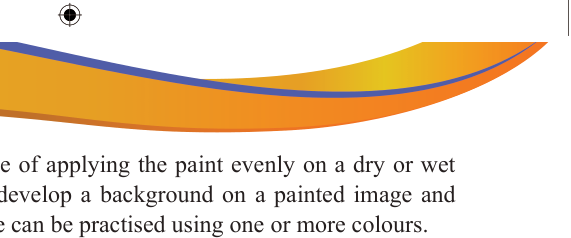

Wash technique: It is a technique of applying the paint evenly on a dry or wet paper surface. Wash is used to develop a background on a painted image and show consistency. This technique can be practised using one or more colours.
Dry-on-dry technique: This is a technique where a dry brush with very little paint is lightly and quickly streaked across a dry piece of paper. This technique is suitable for adding details to a painting, for example, when detailing furs on a dog, leaves of a tree or long hairs on a girl’s head.
Uses of colours
Colours have several functions when applied in art. Artists use colours to decorate environments, communicate messages and enhance forms of work of art. The following are the common uses of colour in art;
Colours are used to enhance object recognition and visibility: We recognise objects more quickly when their colours reflect what we see in the real world.
Colours can be used to symbolise something of a cultural value.
Colours can be used in the expression of emotions and feelings. Artists use colours to communicate their thoughts, ideas and feelings. For instance, warm colours like red, orange and yellow evoke warmth, passion and energy while cool colours like blue, green and purple represent calmness, peace and relaxation. Additionally, an artist can use colours to convey their feelings or communicate wider social and cultural ideas we associate with certain colours.
Colours can be used to influence or guide the way a work of art is appreciated by the audience.
Colours are used to put emphasis on some parts of the work of art as well as to attract attention of the viewers to the artist’s work.

Activity 3.3
Use a piece of white manila paper to paint a cloud formation of your choice using the following techniques:
(a) Wet-on-dry technique
(b) Wet-on-wet technique
(c) Wash technique